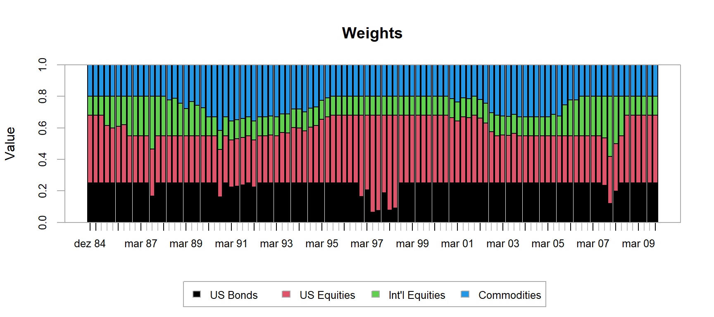

Otimização Multiobjetivo: Exercício teórico e aplicação em portfolio de commodities (backtests)
Rodrigo Hermont Ozon
Last Update: junho 29, 2022
start_time <- Sys.time()Otimização Multiobjetivo para uma carteira de ativos e commodities

PhD. Candidature exercise
É fundamental que um analista ou gerente de carteiras de ativos entenda todos os aspectos do problema de otimização de portfólio para tomar decisões assertivas. Neste post, demonstro numa abordagem quantitativa a aplicação dos princípios da Moderna Teoria de Portfólio para montar uma carteira, definir restrições e objetivos com métodos multiobjetivo para resolver o problema e analisar os resultados. Neste post tento selecionar a melhor configuração de modelo de otimização para o referido portfolio.
Pacotes do R
library(tidyverse)
library(dplyr)
library(MASS)
library(PortfolioAnalytics)
library(ROI)
require(ROI.plugin.glpk)
require(ROI.plugin.quadprog)
library(PerformanceAnalytics)
library(quadprog)
library(corpcor)
library(DEoptim)
library(tsibble)
library(fpp3)
library(plotly)Processamento e paralelização
Este pacote dá capacidade multiprocessamento para o pacote
PortfolioAnalytics.
library(doParallel)
registerDoParallel()Intro
Embora a Teoria Moderna do Portfólio tenha sido introduzida há mais de 60 anos, ela estabelece uma estrutura para definir e avaliar objetivos.
Na estrutura da Moderna Teoria do Portfólio, o portfólio ideal para um investidor manter é o portfólio que maximiza o retorno esperado do portfólio para um determinado nível de risco.
A abordagem acadêmica segue a abordagem de Markowitz usando o retorno médio como medida de ganho e o desvio padrão dos retornos como medida de risco. No entanto, a maioria dos problemas do mundo real considera diferentes medidas de risco, bem como múltiplos objetivos e restrições.
Neste post, iremos explorar tanto a abordagem padrão de Markowitz quanto problemas mais complexos semelhantes aos que encontramos na indústria.
Dataset utilizado
Os dados utilizados referem-se a dados mensais de cinco índices com início em 31/01/2000 e término em 31/12/2009.
Os índices são:
- Títulos dos EUA,
- Ações dos EUA,
- Ações Internacionais,
- Commodities,
- T-Bills dos EUA e;
- Inflação
# Carrega o dataset
data(indexes)
# Tipo de dataframe
class(indexes)[1] "xts" "zoo"# Preview dos dados
head(indexes) US Bonds US Equities Int'l Equities Commodities US Tbill Inflation
1980-01-31 -0.0272 0.0610 0.0462 0.0568 0.0104 0.0149
1980-02-29 -0.0669 0.0031 -0.0040 -0.0093 0.0106 0.0146
1980-03-31 0.0053 -0.0987 -0.1188 -0.1625 0.0121 0.0120
1980-04-30 0.0992 0.0429 0.0864 0.0357 0.0137 0.0095
1980-05-31 0.0000 0.0562 0.0446 0.0573 0.0106 0.0095
1980-06-30 0.0605 0.0296 0.0600 0.0533 0.0066 0.0000Geramos as visualizações de cada uma dessas séries temporais:
ret_us_bonds <- ggplotly(
autoplot(indexes[,"US Bonds"]) + xlab("") + ylab("US Bonds") +
geom_hline(yintercept = 0, colour = "red", linetype = "dashed") +
theme(axis.title.y = element_text(size = 7, angle = 90)) +
theme(plot.title = element_text(size = 9, face = "bold"))
)
ret_us_eq <- ggplotly(
autoplot(indexes[,"US Equities"]) + xlab("") + ylab("US Equities") +
geom_hline(yintercept = 0, colour = "red", linetype = "dashed") +
theme(axis.title.y = element_text(size = 7, angle = 90)) +
theme(plot.title = element_text(size = 9, face = "bold"))
)
ret_int <- ggplotly(
autoplot(indexes[,"Int'l Equities"]) + xlab("") + ylab("Int'l Equities") +
geom_hline(yintercept = 0, colour = "red", linetype = "dashed") +
theme(axis.title.y = element_text(size = 7, angle = 90)) +
theme(plot.title = element_text(size = 9, face = "bold"))
)
ret_commodities <- ggplotly(
autoplot(indexes[,"Commodities"]) + xlab("") + ylab("Commodities") +
geom_hline(yintercept = 0, colour = "red", linetype = "dashed") +
theme(axis.title.y = element_text(size = 7, angle = 90)) +
theme(plot.title = element_text(size = 9, face = "bold"))
)
ret_tbill <- ggplotly(
autoplot(indexes[,"US Tbill"]) + xlab("") + ylab("US Tbill") +
geom_hline(yintercept = 0, colour = "red", linetype = "dashed") +
theme(axis.title.y = element_text(size = 7, angle = 90)) +
theme(plot.title = element_text(size = 9, face = "bold"))
)
ret_infl <- ggplotly(
autoplot(indexes[,"Inflation"]) + xlab("") + ylab("Inflation") +
geom_hline(yintercept = 0, colour = "red", linetype = "dashed") +
theme(axis.title.y = element_text(size = 7, angle = 90)) +
theme(plot.title = element_text(size = 9, face = "bold"))
)
subplot(ret_us_bonds,
ret_us_eq,
ret_int,
ret_commodities,
ret_tbill,
ret_infl,
nrows = 6,
titleY = TRUE ) %>%
layout(title = "Séries temporais de retornos dos ativos no portfólio")Métricas de performance do BenchMark
Utilizaremos em nossa carteira os ativos:
- US Bonds
- US Equities
- IntÍ Equities
- Commodities
Definir um benchmark é importante para medir com precisão o desempenho relativo do portfólio. Por exemplo, se o universo de ativos para a carteira for ações US Equity Large Capitalization, então uma escolha muito razoável de referência é o S&P 500.
returns <- indexes[,1:4]
# Equal weight benchmark
n <- ncol(returns)
equal_weights <- rep(1 / n, n)
benchmark_returns <- Return.portfolio(R = returns,
weights = equal_weights,
rebalance_on = "years")
colnames(benchmark_returns) <- "benchmark"
# Benchmark performance
table.AnnualizedReturns(benchmark_returns)plot(benchmark_returns)Em problemas de otimização de portfólio, as funções objetivo comuns são as métricas de desempenho relativo de risco, retorno, utilidade e benchmark.
Também é comum que o benchmark seja estabelecido com base no mandato/periodicidade do fundo. No entanto, pode haver casos em que não exista um benchmark publicamente disponível que seja razoável para o problema do seu portfólio e seja valioso ter a capacidade de construir seu próprio benchmark personalizado.
O exemplo acima demonstrado cria uma referência/benchmark de peso igual das primeiras 4 colunas no conjunto de dados de índices.
As primeiras quatro colunas do conjunto de dados representam os retornos de US Bonds, US Equities, International Equities e Commodities. Uma abordagem razoável para o benchmark personalizado é a ponderação igual com o rebalanceamento anual.
A intuição para ponderação igual é que você não tem preferência por nenhum dos ativos do universo, então você atribui a cada um deles um peso igual. Você pode então calcular medidas de desempenho, como retorno anualizado e desvio padrão anualizado de seu benchmark personalizado.
Portfólio basico
O problema de gerenciamento de portfolio é formar uma carteira de variância mínima sujeita a restrições de investimento total e posições long únicas.
Existem duas restrições neste problema:
a restrição de investimento total significa que os pesos devem somar 1, e
a restrição somente comprada significa que todos os pesos devem ser maiores ou iguais a 0 (ou seja, nenhuma posição vendida é permitida).
Aqui vale ressaltar que podemos empregar as seguintes variações algorítmicas: (Bennet, 2018)
The following optimization methods are supported:
DEoptim: Differential evolutionrandom: Random portfoliosGenSA: Generalized Simulated Annealingpso: Particle swarm optimizationROI: R Optimization Infrastructure for linear and quadratic programming solvers
O pacote PortfolioAnalytics também suporta os tipos de
restrição de limite de posição, rotatividade, diversificação, exposição
a fatores e alavancagem.
Os pesos são considerados ótimos no sentido de que o conjunto de pesos minimiza o valor objetivo, o desvio padrão do portfólio e satisfaz o investimento total e as restrições somente compradas com base em dados históricos.
Um desafio é saber qual solucionador usar e as capacidades e limites do solucionador escolhido. Um solver é um algoritmo projetado para encontrar a solução ótima para um determinado problema. Podemos escolher um solver com base no objetivo ou formular o objetivo para se adequar ao solver escolhido.
Idealmente, você deseja a flexibilidade de alternar facilmente entre solvers, dependendo do problema. Em muitos casos, há mais de um solver que pode resolver o problema e devemos avaliar ambos. Um exemplo de um solver de forma fechada é um solver de programação quadrática.
A principal vantagem dos solvers de forma fechada é que eles resolvem um determinado problema de forma muito rápida e eficiente e retornam uma solução exata. A principal desvantagem é que o problema deve ser formulado de uma maneira muito específica, tipicamente exclusiva do solver.
Um exemplo de um solver global é a otimização de evolução diferencial (veja a contribuição de David Ardia et alli na lista de referências) .
Os solvers globais têm a vantagem de poder resolver tipos mais gerais de problemas e encontrar a solução aproximada do mínimo ou máximo global da função objetivo com mínimos ou máximos locais.
No entanto, os algoritmos usados em solvers globais são
relativamente mais complexos e mais intensivos em computação. Neste
post usaremos solucionadores globais e de formulário fechado e
utilizaremos o pacote do R PortfolioAnalytics para superar
esses desafios de otimização de portfólio.
Modelo de variância mínima (base)
A carteira ótima de Markowitz considera a minimização do risco (variância) e maximização do retorno médio.
\[ \max \displaystyle \sum_{i=1}^{n} \mu_i w_i \]
\[ \min \displaystyle\sum_{i=1}^{n}\sum_{j=1}^{n} \sigma_{ij}w_i w_j \]
Sujeito a:
\[ \displaystyle\sum_{ij=1}^{n}w_{ij} \geq 0 \] \[ \displaystyle \sum_{ij=1}^{n}\mu_{ij} \geq \mbox{taxa básica de juros (TMA)} \]
Comecemos com as definições de restrições e de objetivo(s):
# Base portfolio specification
base_port_spec <- portfolio.spec(assets = colnames(returns))
# Adiciona a restrição de que os pesos devem somar 1
base_port_spec <- add.constraint(portfolio = base_port_spec, type = "full_investment")
base_port_spec <- add.constraint(portfolio = base_port_spec,
type = "weight_sum_constraint",
min_sum = 0.98,
max_sum = 1.02)
# Adicona a restrição de posições long únicas para que os pesos oscilem entre 0 a 100% nas alocações
base_port_spec <- add.constraint(portfolio = base_port_spec, type = "long_only")
# Adiciona o objetivo de minimizar a variância do portfólio
base_port_spec <- add.objective(portfolio = base_port_spec, type = "risk", name = "StdDev")
print(base_port_spec)**************************************************
PortfolioAnalytics Portfolio Specification
**************************************************
Call:
portfolio.spec(assets = colnames(returns))
Number of assets: 4
Asset Names
[1] "US Bonds" "US Equities" "Int'l Equities" "Commodities"
Constraints
Enabled constraint types
- full_investment
- long_only
Objectives:
Enabled objective names
- StdDev A especificação do portfólio básico é minimizar o desvio padrão do portfólio sujeito a restrições de investimento total e somente long positions.
Limitações do modelo de otimização de Markowitz
O modelo tradicional apresentado seminalmente por Harry Markowitz apresenta algumas limitações que podem ser superadas com a inclusão de mais objetivos (conflitantes) a serem percorridos e restrições mais realistas para uma melhor recomendação de combinações.
Uma das críticas mais populares na literatura é a de que uma das bases da teoria de Markowitz é a Hipótese de Eficiência de Mercado, que anuncia que um investidor não conseguirá atingir de forma consistentemente retornos superiores à média do mercado, considerando as informações publicamente disponíveis quando o investimento é feito.
Outra crítica comumente aceita é a de que pelo fato de usar rendimentos e riscos históricos para planejar uma carteira pensando no retorno futuro, que pode ser muito diferente, gerando uma série de dificuldades em relação a acurácia de um bom forecasting.
Além disso, Markowitz apresenta vários pressupostos irrealistas em sua teoria, como:
- Os investidores são racionais, e evitam o risco quando possível;
- Não há assimetria de informação no mercado;
- Não há investidores suficientes para influenciar os preços de mercado;
- Os investidores têm acesso ilimitado a empréstimos e empréstimos à taxa de juros livre de risco.
No entanto, a realidade prova que, na maioria das vezes, o que ocorre é o contrário destes pressupostos.
Ou seja, o mercado inclui investidores irracionais, que negligenciam os riscos dos ativos.
Além disso, como é de conhecimento geral, há muitos participantes que podem influenciar o movimento dos preços dos ativos, além de que o acesso ao crédito é, quase sempre, restrito.
Backtest de otimização
Modelo base (variância mínima)
#Run the optimization with periodic rebalancing
opt_base <- optimize.portfolio.rebalancing(R = returns,
optimize_method = "ROI",
portfolio = base_port_spec,
rebalance_on = "quarters",
training_period = 60,
rolling_window = 60)
# Calculate portfolio returns
base_returns <- Return.portfolio(returns, extractWeights(opt_base))
colnames(base_returns) <- "base"
chart.Weights(opt_base)Compara com o modelo base:
# Merge benchmark and portfolio returns
ret <- cbind(benchmark_returns, base_returns)
# Annualized performance
table.AnnualizedReturns(ret)Modelagem de período único
A performance desse modelo, pode ser melhor compreendida com a construção da sua estimativa para todo o período da série temporal de modo a avaliarmos melhor os pesos e também a frente de Pareto:
# Otimizar com ROI
optimize.portfolio(R = returns,
portfolio = base_port_spec,
optimize_method = "ROI",
trace = TRUE)***********************************
PortfolioAnalytics Optimization
***********************************
Call:
optimize.portfolio(R = returns, portfolio = base_port_spec, optimize_method = "ROI",
trace = TRUE)
Optimal Weights:
US Bonds US Equities Int'l Equities Commodities
0.8544 0.0587 0.0000 0.0869
Objective Measure:
StdDev
0.01668 Fronteira Eficiente é um conceito apresentado por Harry Markowitz. Ela demonstra que o risco de uma carteira não é dado simplesmente pela média dos ativos individuais, mas sim pela diversificação da carteira de investimento como um todo.
A eficiência de Pareto ou otimalidade de Pareto estabelece uma relação de compromisso na alocação de recursos, no qual é impossível realocá-los de forma que todos os recursos sejam melhorados de forma conjunta. Considerando dois objetivos (recursos), por exemplo, a otimalidade Pareto é um estado no qual é impossível melhorar um dos objetivos, sem necessariamente piorar o outro.
Na otimização multiobjetivo, esse conceito é amplamente aplicado para a determinação do fronteira Pareto, isto é, o conjunto de pontos factíveis que não são dominados por nenhum outro ponto.
# Apresenta os pesos das 15 carteiras na fronteira eficiente
front_eficiente <- create.EfficientFrontier(R = returns,
portfolio = base_port_spec,
type = "mean-StdDev",
n.portfolios = 15)
# Apresenta o gráfico da fronteira eficiente
renda_fixa <- (1+.0025)^(1/12)-1 # Taxa Básica de Juros EUA em 2010 https://g1.globo.com/economia-e-negocios/noticia/2010/06/eua-banco-central-americano-mantem-a-taxa-de-juros-no-mesmo-patamar-1.html
chart.EfficientFrontier(front_eficiente,
match.col = "StdDev",
type = "l",
col = "blue",
rf = renda_fixa,
chart.assets = TRUE,
RAR.text = "Índice de Sharpe",
pch = 4,
main = 'Frente de Pareto ou Fronteira Eficiente')Modelo de restrição de caixa (box)
As restrições de “Box” para os pesos de ativos podem ser
imputadas de modo que o peso mínimo de qualquer ativo seja maior ou
igual a 0,05 e o peso máximo de qualquer ativo seja menor ou igual a
0,8. Os valores para min e max podem ser passados como escalares ou
vetores. Se min e max forem escalares, os
valores serão replicados como vetores para todos os ativos. Se
min e max não forem especificados, um peso
mínimo de 0 e peso máximo de 1 são assumidos.
Insere mais uma restrição no modelo base, impondo limite de caixa para os ativos não superarem pesos de 40%:
# Make a copy of the portfolio specification
box_port_spec <- base_port_spec
# Update the constraint
box_port_spec <- add.constraint(portfolio = box_port_spec,
type = "box",
min = 0.05,
max = 0.4, indexnum = 2)
# Backtest
opt_box <- optimize.portfolio.rebalancing(R = returns,
optimize_method = "ROI",
portfolio = box_port_spec,
rebalance_on = "quarters",
training_period = 60, rolling_window = 60)
# Calculate portfolio returns
box_returns <- Return.portfolio(returns, extractWeights(opt_box))
colnames(box_returns) <- "box"
chart.Weights(opt_box)Compara com o benchmark e com o modelo base:
# Merge benchmark, portfolio returns and box_returns
ret <- cbind(benchmark_returns, base_returns, box_returns)
# Annualized performance
table.AnnualizedReturns(ret)Você pode ver pelas métricas de desempenho anualizadas que o portfólio com restrições de caixa supera o benchmark (retorno maior e risco menor), mas apresenta desempenho inferior ao portfólio base em termos do Índice de Sharpe como uma medida de desempenho ajustado ao risco.
O Índice de Sharpe é uma medida de retorno ajustado ao risco e é calculado dividindo o excesso de retorno anualizado da carteira pelo desvio padrão anualizado da carteira.
Qual é a conclusão que tiramos ?
Assim, para cada 1% de risco assumido no portfólio base, tem-se 1,77%
de retorno, enquanto no benchmark, para cada 1% de risco assumido,
tem-se 0,75% de retorno e no portfólio box temos 0,93% de
retorno para cada aumento de 1% no risco assumido. Logo, a melhor
relação de risco x retorno é do portfólio base aqui.
Valde destacar que um Índice de Sharpe igual ou acima de 1 significa que se trata de um ótimo fundo/portfólio. Um Índice de Sharpe de 0,5 significa que o fundo é bom, consistente em entregar resultados.
Por outro lado, se o índice de Sharpe for igual a 0, significa que o fundo/portfólio não entrega um resultado acima do ativo livre de risco. Se você está assumindo um grau de risco para não ter ganhos acima da Taxa Selic (ou taxa de juros básica da economia daquele país), você vai preferir um fundo conservador.
Índice de Sharpe negativo significa que um fundo gera resultados aquém dos ativos livres de risco, sendo considerado um fundo “podre”. Podemos assumir esta perda no curto prazo, como vimos durante a pandemia, mas não no longo prazo.
Modelagem de período único
A performance desse modelo, pode ser melhor compreendida com a construção da sua estimativa para todo o período da série temporal de modo a avaliarmos melhor os pesos e também a frente de Pareto:
# Otimizar com ROI
optimize.portfolio(R = returns,
portfolio = box_port_spec,
optimize_method = "ROI",
trace = TRUE)***********************************
PortfolioAnalytics Optimization
***********************************
Call:
optimize.portfolio(R = returns, portfolio = box_port_spec, optimize_method = "ROI",
trace = TRUE)
Optimal Weights:
US Bonds US Equities Int'l Equities Commodities
0.4000 0.3054 0.0734 0.2212
Objective Measure:
StdDev
0.02461 # Apresenta os pesos das 15 carteiras na fronteira eficiente
front_eficiente <- create.EfficientFrontier(R = returns,
portfolio = box_port_spec,
type = "mean-StdDev",
n.portfolios = 15)
# Apresenta o gráfico da fronteira eficiente
renda_fixa <- (1+.0025)^(1/12)-1 # Taxa Básica de Juros EUA em 2010 https://g1.globo.com/economia-e-negocios/noticia/2010/06/eua-banco-central-americano-mantem-a-taxa-de-juros-no-mesmo-patamar-1.html
chart.EfficientFrontier(front_eficiente,
match.col = "StdDev",
type = "l",
col = "blue",
rf = renda_fixa,
chart.assets = TRUE,
RAR.text = "Índice de Sharpe",
pch = 4,
main = 'Frente de Pareto ou Fronteira Eficiente')Modelo de Maximização da Utilidade Quadrática
Utilidade é uma medida de satisfação relativa que um investidor obtém de diferentes carteiras. Podemos gerar uma função matemática para representar essa utilidade que é uma função do retorno esperado da carteira, da variância da carteira e uma medida de aversão ao risco.
\[ U=E(r)-\frac{1}{2}\lambda\sigma^2 \]
Onde:
\(U=\) Utilidade
\(E(r)=\) retorno esperado do portfólio
\(\lambda=\) coeficiente de aversão ao risco
\(\sigma^2=\) variância do portfólio
Ao determinar a aversão ao risco (\(\lambda\)), medimos a recompensa marginal que um investidor precisa para assumir mais riscos. Um investidor avesso ao risco precisará de uma alta margem de retorno por assumir mais riscos. A equação de utilidade mostra o seguinte:
A utilidade pode ser positiva ou negativa – é ilimitada.
Altos retornos adicionam utilidade.
A alta variância reduz a utilidade.
A utilidade não mede a satisfação, mas pode ser usada para classificar portfólios.
O coeficiente de aversão ao risco, \(\lambda\), é positivo para investidores avessos ao risco (qualquer aumento no risco reduz a utilidade), é 0 para investidores neutros ao risco (mudanças no risco não afetam a utilidade) e negativo para investidores que buscam risco (risco adicional aumenta a utilidade).
Otimização da Utilidade Quadrática
Consideremos um problema de otimização de portfólio onde o objetivo é maximizar a utilidade quadrática, sujeito às restrições tais que o peso de cada ativo deve ser maior ou igual a zero e os pesos devem somar 1.
Max: \(w^{T} \mu - \lambda w^{T} \sum w\) (função utilidade quadrática)
Max: \(\displaystyle \sum_{n}^{i=1} \mu_i w_i\)
Min: \(\displaystyle \sum_{i=1}^{n} \sum^{j=1}_{n}\sigma_{ij}x_i x_j\)
Sujeito a: \(w_i \geq 0\) com \(\displaystyle \sum^{n}_{i=1}\mu_i x_i \geq E\) e
\(\displaystyle \sum^{n}_{i=1} w_i =1\)Sendo que:
\(w\) é o vetor dos pesos
\(\mu\) é o vetor de retornos esperados
\(\lambda\) é o parâmetro de aversão ao risco
\(\sum\) é a matriz de variâncias e covariâncias
\(\sigma_{ij}\) o desvio-padrão para linha/colunas ou medida simples de risco de cada ativo no portfólio
A intuição por trás dessa formulação é que precisamos maximizar o retorno do portfólio, com um prazo de penalização para a variância do portfólio.
O primeiro termo da equação é o retorno esperado da carteira, a transposta do vetor de pesos multiplicado pelo vetor de retorno esperado.
O segundo termo é o lambda multiplicado pela variância da carteira, a transposta do vetor de pesos multiplicada pela matriz de variância-covariância dos retornos do ativo multiplicada pelo vetor de pesos.
Esse termo lambda é muitas vezes referido como o parâmetro de aversão ao risco, um valor mais alto para lambda significa uma penalidade mais alta para a variância do portfólio.
Utilizando a função solve.QP() do pacote
quadprog para resolver a maximização da utilidade
quadrática e problem.solve.QP resolvemos problemas de
programação quadrática da forma mostrada para minimizar a negativa da
transposta do vetor d vezes o vetor b mais
metade vezes a tranposta do vetor b vezes a matriz
D vezes o vetor b.
\[ min\left(-d^{T}b+\frac{1}{2}b^{T}Db \right) \]
Sujeito a:
\[ A^{T}b\geq b_0 \]
Com função de utilidade quadrática dada por:
Podemos substituir os pesos pelo vetor b, os retornos
esperados pelo vetor d e a matriz de variância-covariância
pela matriz D. Observe também que os sinais são
diferentes.
Isso é bom porque minimizar a negativa de um objetivo é equivalente a maximizar o objetivo.
Definição das restrições e objetivos:
# Seta a especificação do portfólio updating o
port_spec <- base_port_spec
# Pesos min e max especificados para cada ativo
port_spec <- add.constraint(portfolio = port_spec,
type = "box",
min = c(0.05, # US Bonds
0.30, # US Equities
0.12, # Int'l Equities
0.20 # Commodities
),
max = c(0.25, # US Bonds
0.80, # US Equities
0.72, # Int'l Equities
0.80 # Commodities
))
# Adiciona o objetivo de maximizar a media de retorno do portfólio
port_spec <- add.objective(portfolio = port_spec, type = "return", name = "mean")
# Adiciona o objetivo de minimizar a variância do portfólio com parâmetro lambda
port_spec <- add.objective(portfolio = port_spec, type = "risk", name = "var", risk_aversion = 10)Roda o modelo de otimização em backtesting e plota os pesos:
# Resolve o problema de otimização
opt_util <- optimize.portfolio.rebalancing(R = returns,
optimize_method = "ROI",
portfolio = port_spec,
rebalance_on = "quarters",
training_period = 60,
rolling_window = 60)
# Calculate portfolio returns
util_returns <- Return.portfolio(returns, extractWeights(opt_util))
colnames(util_returns) <- "utilidade"
chart.Weights(opt_util)
Compara com o benchmark, com o modelo base e com modelo box:
# Merge benchmark, portfolio returns and box_returns
ret <- cbind(benchmark_returns, base_returns, box_returns, util_returns)
# Annualized performance
table.AnnualizedReturns(ret)Modelagem de período único
A performance desse modelo, pode ser melhor compreendida com a construção da sua estimativa para todo o período da série temporal de modo a avaliarmos melhor os pesos e também a frente de Pareto:
# Otimizar com ROI
optimize.portfolio(R = returns,
portfolio = port_spec,
optimize_method = "ROI",
trace = TRUE)***********************************
PortfolioAnalytics Optimization
***********************************
Call:
optimize.portfolio(R = returns, portfolio = port_spec, optimize_method = "ROI",
trace = TRUE)
Optimal Weights:
US Bonds US Equities Int'l Equities Commodities
0.2500 0.4225 0.1200 0.2075
Objective Measure:
mean
0.006881
StdDev
0.0295 # Apresenta os pesos das 15 carteiras na fronteira eficiente
front_eficiente <- create.EfficientFrontier(R = returns,
portfolio = port_spec,
type = "mean-StdDev",
n.portfolios = 15)
# Apresenta o gráfico da fronteira eficiente
renda_fixa <- (1+.0025)^(1/12)-1 # Taxa Básica de Juros EUA em 2010 https://g1.globo.com/economia-e-negocios/noticia/2010/06/eua-banco-central-americano-mantem-a-taxa-de-juros-no-mesmo-patamar-1.html
chart.EfficientFrontier(front_eficiente,
match.col = "StdDev",
type = "l",
col = "blue",
rf = renda_fixa,
chart.assets = TRUE,
RAR.text = "Índice de Sharpe",
pch = 4,
main = 'Frente de Pareto ou Fronteira Eficiente')O ponto principal é demonstrar o que é preciso para configurar e resolver um problema diretamente com um solver de programação quadrática em R.
Isso dá muito trabalho para um problema simples e propenso a erros. Mas e se quisermos usar um solver diferente? Adicionar, remover ou alterar restrições?
Temos que fazer tudo isso para encaixar o outro solver. Isso pode ser um desafio mesmo para problemas triviais.
Há pouco suporte para visualização ao usar solvers diretamente e, muitas vezes, as visualizações são específicas para ele.
Modelo com restrição de diversificação
A diversificação é calculada como \(1 -
\displaystyle \sum_{i=1}^n pesos^2\). A restrição de
diversificação é implementada nos otimizadores globais aplicando uma
penalidade se o valor de diversificação estiver a mais de 5% do
parâmetro div_target. A restrição de diversificação não é
suportada para os otimizadores de ROI, apenas para os
otimizadores numéricos globais.
Atualiza o modelo base com a restrição de diversificação:
# Seta a especificação do portfólio updating o
port_divers <- base_port_spec
# Adiciona a restrição de diversificação
port_divers <- add.constraint(portfolio = port_divers,
type = "diversification",
div_target = 0.7)
# Adiciono restrição de fator de exposição ao risco por ativo
port_divers <- add.constraint(portfolio = port_divers,
type = "factor_exposure",
B = c(
0.02, # US Bonds
0.70, # US Equities
0.79, # Int'l Equities
0.85 # Commodities
),
lower = 0.6,
upper = 0.9)
# Adiciona o objetivo de maximizar a media de retorno do portfólio
port_divers <- add.objective(portfolio = port_divers, type = "return", name = "mean")
# Adiciona o objetivo de minimizar a variância do portfólio com parâmetro lambda
port_divers <- add.objective(portfolio = port_divers, type = "risk", name = "var", risk_aversion = 10)
# Adiciona um objetivo de risco orçamentário
port <- add.objective(
portfolio = port_divers,
type = "risk_budget",
name = "StdDev",
min_prisk = 0.05,
max_prisk = 0.1
)Roda o modelo de otimização em backtesting e plota os pesos:
# Resolve o problema de otimização
opt_divers <- optimize.portfolio.rebalancing(R = returns,
optimize_method = "ROI",
portfolio = port_divers,
rebalance_on = "quarters",
training_period = 60,
rolling_window = 60)
# Calculate portfolio returns
divers_returns <- Return.portfolio(returns, extractWeights(opt_divers))
colnames(divers_returns) <- "diversificacao"
chart.Weights(opt_divers)Compara com o benchmark e com os outros modelos:
# Merge benchmark, portfolio returns and box_returns
ret <- cbind(benchmark_returns, base_returns, box_returns, util_returns, divers_returns)
# Annualized performance
table.AnnualizedReturns(ret)Modelagem de período único
A performance desse modelo, pode ser melhor compreendida com a construção da sua estimativa para todo o período da série temporal de modo a avaliarmos melhor os pesos e também a frente de Pareto:
# Otimizar com ROI
optimize.portfolio(R = returns,
portfolio = port_divers,
optimize_method = "ROI",
trace = TRUE)***********************************
PortfolioAnalytics Optimization
***********************************
Call:
optimize.portfolio(R = returns, portfolio = port_divers, optimize_method = "ROI",
trace = TRUE)
Optimal Weights:
US Bonds US Equities Int'l Equities Commodities
0.2218 0.3861 0.1336 0.2586
Objective Measure:
mean
0.006654
StdDev
0.03022 # Apresenta os pesos das 15 carteiras na fronteira eficiente
front_eficiente <- create.EfficientFrontier(R = returns,
portfolio = port_divers,
type = "mean-StdDev",
n.portfolios = 15)
# Apresenta o gráfico da fronteira eficiente
renda_fixa <- (1+.0025)^(1/12)-1 # Taxa Básica de Juros EUA em 2010 https://g1.globo.com/economia-e-negocios/noticia/2010/06/eua-banco-central-americano-mantem-a-taxa-de-juros-no-mesmo-patamar-1.html
chart.EfficientFrontier(front_eficiente,
match.col = "StdDev",
type = "l",
col = "blue",
rf = renda_fixa,
chart.assets = TRUE,
RAR.text = "Índice de Sharpe",
pch = 4,
main = 'Frente de Pareto ou Fronteira Eficiente')
Modelo com restrição de fator de exposição
Já a outra restrição de fator de exposição permite que o usuário estabeleça limites superiores e inferiores para a exposição a fatores de risco. As exposições podem ser passadas como um vetor ou uma matriz. Aqui especificamos um vetor para \(B\) com valores arbitrários, isto é, betas dos ativos, com uma faixa de exposição ao risco de mercado de 0,6 a 0,9.
Atualiza o modelo base com a restrição de exposição ao risco:
# Seta a especificação do portfólio updating o
port_custom <- base_port_spec
# Adiciono restrição de fator de exposição ao risco por ativo
port_custom <- add.constraint(portfolio = port_custom,
type = "factor_exposure",
B = c(
0.02, # US Bonds
0.70, # US Equities
0.79, # Int'l Equities
0.85 # Commodities
),
lower = 0.6,
upper = 0.9)
# Adiciona o objetivo de maximizar a media de retorno do portfólio
port_custom <- add.objective(portfolio = port_custom, type = "return", name = "mean")
# Adiciona o objetivo de minimizar a variância do portfólio com parâmetro lambda
#port_custom <- add.objective(portfolio = port_custom, type = "risk", name = "var", risk_aversion = 10)
# Adiciona um objetivo de risco orçamentário
port <- add.objective(
portfolio = port_custom,
type = "risk_budget",
name = "StdDev",
min_prisk = 0.05,
max_prisk = 0.1
)Roda o modelo de otimização em backtesting e plota os pesos:
# Resolve o problema de otimização
opt_custom <- optimize.portfolio.rebalancing(R = returns,
optimize_method = "ROI",
portfolio = port_custom,
rebalance_on = "quarters",
training_period = 60,
rolling_window = 60)
# Calculate portfolio returns
custom_returns <- Return.portfolio(returns, extractWeights(opt_custom))
colnames(custom_returns) <- "exposicao_risco"
#chart.Weights(opt_custom)Compara com o benchmark e com os outros modelos:
# Merge benchmark, portfolio returns and box_returns
ret <- cbind(benchmark_returns, base_returns, box_returns, util_returns, divers_returns, custom_returns)
# Annualized performance
as.data.frame(t(table.AnnualizedReturns(ret)))Modelagem de período único
A performance desse modelo, pode ser melhor compreendida com a construção da sua estimativa para todo o período da série temporal de modo a avaliarmos melhor os pesos e também a frente de Pareto:
# Otimizar com ROI
optimize.portfolio(R = returns,
portfolio = port_custom,
optimize_method = "ROI",
trace = TRUE)***********************************
PortfolioAnalytics Optimization
***********************************
Call:
optimize.portfolio(R = returns, portfolio = port_custom, optimize_method = "ROI",
trace = TRUE)
Optimal Weights:
US Bonds US Equities Int'l Equities Commodities
0.1471 0.8529 0.0000 0.0000
Objective Measure:
mean
0.008293
StdDev
0.03936 # Apresenta os pesos das 15 carteiras na fronteira eficiente
front_eficiente <- create.EfficientFrontier(R = returns,
portfolio = port_custom,
type = "mean-StdDev",
n.portfolios = 15)
# Apresenta o gráfico da fronteira eficiente
renda_fixa <- (1+.0025)^(1/12)-1 # Taxa Básica de Juros EUA em 2010 https://g1.globo.com/economia-e-negocios/noticia/2010/06/eua-banco-central-americano-mantem-a-taxa-de-juros-no-mesmo-patamar-1.html
chart.EfficientFrontier(front_eficiente,
match.col = "StdDev",
type = "l",
col = "blue",
rf = renda_fixa,
chart.assets = TRUE,
RAR.text = "Índice de Sharpe",
pch = 4,
main = 'Frente de Pareto ou Fronteira Eficiente')Modelo com restrição de concentração com base no índice HH
O objetivo de concentração de pesos permite ao usuário especificar um
objetivo para minimizar a concentração medida pelo Índice
Hirschman-Herfindahl, ou HHI. Para problemas de otimização resolvidos
com os otimizadores numéricos globais, o valor de HHI da carteira é
penalizado usando o parâmetro conc_aversion como
multiplicador.
Para problemas de otimização quadrática utilizando a concentração de pesos como objetivo utilizando o solucionador de ROI, isso é implementado como uma penalidade para a função-objetivo. A função-objetivo é implementada da seguinte forma:
\[ \underset {\omega} {Max:} \;\;\; \omega^´ \mu - \frac \lambda 2 \;(\omega^´ \Sigma \omega + \lambda_{hhi} \times HHI) \]
Onde
\(\mu\) é o retorno médio estimado do ativo,
\(\lambda\) é o parâmetro de aversão ao risco,
\(\lambda_{HHI}\) é o parâmetro de aversão à concentração,
\(HHI\) é o índice HHI da carteira,
\(\sum\) é a matriz de covariância estimada dos retornos dos ativos e
\(\omega\) é o vetor dos pesos.
Aqui adicionamos um objetivo de concentração de pesos.
Atualiza o modelo base com a restrição para evitar concentrações nas alocações:
# Seta a especificação do portfólio updating o
port_concentr <- base_port_spec
# Pesos min e max especificados para cada ativo
port_concentr <- add.constraint(portfolio = port_concentr,
type = "box",
min = c(0.05, # US Bonds
0.30, # US Equities
0.22, # Int'l Equities
0.30 # Commodities
),
max = c(0.25, # US Bonds
0.80, # US Equities
0.72, # Int'l Equities
0.80 # Commodities
))
# Adiciona objetivo para evitar concentração nas alocações ótimas
port_concentr <- add.objective(portfolio = port_concentr,
type = "weight_concentration",
name = "HHI",
conc_aversion = 0.1)
spec <- add.objective(portfolio = port_concentr,
type = "weight_concentration",
name = "HHI",
conc_aversion = c(0.03, 0.06),
conc_groups = list(c(1, 2),
c(3, 4))
)
# Adiciona o objetivo de maximizar a media de retorno do portfólio
port_concentr <- add.objective(portfolio = port_concentr, type = "return", name = "mean")
# Adiciona o objetivo de minimizar a variância do portfólio com parâmetro lambda
port_concentr <- add.objective(portfolio = port_concentr, type = "risk", name = "var", risk_aversion = 10)Roda o modelo de otimização em backtesting e plota os pesos:
# Resolve o problema de otimização
opt_concentr <- optimize.portfolio.rebalancing(R = returns,
optimize_method = "ROI",
portfolio = port_concentr,
rebalance_on = "quarters",
training_period = 60,
rolling_window = 60)
# Calculate portfolio returns
concentr_returns <- Return.portfolio(returns, extractWeights(opt_concentr))
colnames(concentr_returns) <- "anti_concentracao"
#chart.Weights(opt_custom)Compara com o benchmark e com os outros modelos:
# Merge benchmark, portfolio returns and box_returns
ret <- cbind(benchmark_returns, base_returns, box_returns, util_returns, divers_returns, custom_returns, concentr_returns)
# Annualized performance
as.data.frame(t(table.AnnualizedReturns(ret)))Modelagem de período único
A performance desse modelo, pode ser melhor compreendida com a construção da sua estimativa para todo o período da série temporal de modo a avaliarmos melhor os pesos e também a frente de Pareto:
# Otimizar com ROI
optimize.portfolio(R = returns,
portfolio = port_concentr,
optimize_method = "ROI",
trace = TRUE)***********************************
PortfolioAnalytics Optimization
***********************************
Call:
optimize.portfolio(R = returns, portfolio = port_concentr, optimize_method = "ROI",
trace = TRUE)
Optimal Weights:
US Bonds US Equities Int'l Equities Commodities
0.18 0.30 0.22 0.30
Objective Measure:
mean
0.006368
StdDev
0.03193 # Apresenta os pesos das 15 carteiras na fronteira eficiente
front_eficiente <- create.EfficientFrontier(R = returns,
portfolio = port_concentr,
type = "mean-StdDev",
n.portfolios = 15)
# Apresenta o gráfico da fronteira eficiente
renda_fixa <- (1+.0025)^(1/12)-1 # Taxa Básica de Juros EUA em 2010 https://g1.globo.com/economia-e-negocios/noticia/2010/06/eua-banco-central-americano-mantem-a-taxa-de-juros-no-mesmo-patamar-1.html
chart.EfficientFrontier(front_eficiente,
match.col = "StdDev",
type = "l",
col = "blue",
rf = renda_fixa,
chart.assets = TRUE,
RAR.text = "Índice de Sharpe",
pch = 4,
main = 'Frente de Pareto ou Fronteira Eficiente')Modelo com restrição de fluxos de trades
Insiro a restrição de fluxo de transações (limites de trades) que é uma medida de quão frequentemente os ativos são comprados e vendidos pelos gestores. O fluxo de transações é calculado tomando o valor total dos novos títulos comprados ou o número de títulos vendidos (o que for menor) durante um determinado período, dividido pelo valor total do ativo líquido da carteira. A medida é geralmente feita para um período de 12 meses.
Um determinado turnover-alvo pode ser especificado como uma
restrição. O fluxo de transações (turnover) inicial é calculado
a partir de um conjunto de pesos iniciais; por padrão, são os pesos
iniciais no objeto da carteira. A restrição de turnover é implementada
para os otimizadores globais aplicando uma penalidade se o seu valor
estiver a mais de 5% do alvo. Essa restrição não é suportada atualmente
para a otimização quadrática e para problemas de mínima variância usando
o otimizador de ROI.
Atualiza o modelo base com a restrição para limite de trades em posições short e long:
# Seta a especificação do portfólio updating o
port_trades <- base_port_spec
# Adiciona a restrição de turnover
port_trades <- add.constraint(portfolio = port_trades,
type = "turnover",
turnover_target = 0.2)
# Adiciona a restrição de custos de transação por trade
port_trades <- add.constraint(portfolio = port_trades,
type = "transaction_cost",
ptc = 0.01)
# Adiciona o objetivo de maximizar a media de retorno do portfólio
port_trades <- add.objective(portfolio = port_trades, type = "return", name = "mean")
# Adiciona o objetivo de minimizar a variância do portfólio com parâmetro lambda
port_trades <- add.objective(portfolio = port_trades, type = "risk", name = "var", risk_aversion = 10)Roda o modelo de otimização em backtesting e plota os pesos:
# Resolve o problema de otimização
opt_trades <- optimize.portfolio.rebalancing(R = returns,
optimize_method = "ROI",
portfolio = port_trades,
rebalance_on = "quarters",
training_period = 60,
rolling_window = 60)
# Calculate portfolio returns
trades_returns <- Return.portfolio(returns, extractWeights(opt_trades))
colnames(trades_returns) <- "trades_target"
#chart.Weights(opt_custom)Compara com o benchmark e com os outros modelos:
# Merge benchmark, portfolio returns and box_returns
ret <- cbind(benchmark_returns, base_returns, box_returns, util_returns, divers_returns, custom_returns, concentr_returns, trades_returns)
# Annualized performance
as.data.frame(t(table.AnnualizedReturns(ret)))Modelagem de período único
A performance desse modelo, pode ser melhor compreendida com a construção da sua estimativa para todo o período da série temporal de modo a avaliarmos melhor os pesos e também a frente de Pareto:
# Otimizar com ROI
optimize.portfolio(R = returns,
portfolio = port_trades,
optimize_method = "ROI",
trace = TRUE)***********************************
PortfolioAnalytics Optimization
***********************************
Call:
optimize.portfolio(R = returns, portfolio = port_trades, optimize_method = "ROI",
trace = TRUE)
Optimal Weights:
US Bonds US Equities Int'l Equities Commodities
0.35 0.25 0.15 0.25
Objective Measure:
mean
0.006446
StdDev
0.0263 # Apresenta os pesos das 15 carteiras na fronteira eficiente
front_eficiente <- create.EfficientFrontier(R = returns,
portfolio = port_trades,
type = "mean-StdDev",
n.portfolios = 15)
# Apresenta o gráfico da fronteira eficiente
renda_fixa <- (1+.0025)^(1/12)-1 # Taxa Básica de Juros EUA em 2010 https://g1.globo.com/economia-e-negocios/noticia/2010/06/eua-banco-central-americano-mantem-a-taxa-de-juros-no-mesmo-patamar-1.html
chart.EfficientFrontier(front_eficiente,
match.col = "StdDev",
type = "l",
col = "blue",
rf = renda_fixa,
chart.assets = TRUE,
RAR.text = "Índice de Sharpe",
pch = 4,
main = 'Frente de Pareto ou Fronteira Eficiente')Comparativo das performances dos modelos base + restrições
# Chart the performance summary
charts.PerformanceSummary(R = ret)Modelo MultiObjetivo com Restrições Específicas
O modelo multiobjetivo agora insere aspectos mais proeminentes e para além da limitada teoria de portfólio seminalmente criada por Markowitz:
# Seta o dataset
port <- portfolio.spec(assets = colnames(returns))
# Definição dos multiobjetivos:
# Max retorno médio portfolio
port <- add.objective(portfolio = port,
type = 'return',
name = 'mean')
# Adiciona o objetivo de minimizar a variância do portfólio
base_port_spec <- add.objective(portfolio = base_port_spec, type = "risk", name = "StdDev")
# O objetivo de orçamento de risco da carteira (Portfolio Risk Budget) permite ao usuário especificar restrições para minimizar a contribuição dos componentes (ou seja, contribuição iguais de risco) ou especificar limites superiores e inferiores para a contribuição de risco percentual.
port <- add.objective(portfolio = port,
type = "risk_budget",
name = "ETL",
arguments = list(p = 0.95),
max_prisk = 0.3) # Aqui especificamos que nenhum ativo pode contribuir com mais de 30% para o risco total da carteira.
# Min risco para a perda na cauda esperada da carteira com um nível de confiança de 0,95.
port <- add.objective(portfolio = port,
type = 'risk',
name = 'ETL',
arguments = list(p = 0.95))
# Objetivo de não-concentração nas alocações
port <- add.objective(portfolio = port,
type = "weight_concentration",
name = "HHI",
conc_aversion = 0.1)
spec <- add.objective(portfolio = port,
type = "weight_concentration",
name = "HHI",
conc_aversion = c(0.03, 0.06),
conc_groups = list(c(1, 2),
c(3, 4))
)Com as seguintes restrições básicas:
# Adiciona a restrição de que os pesos devem somar 1
port <- add.constraint(portfolio = port, type = "full_investment")
port <- add.constraint(portfolio = port,
type = "weight_sum_constraint",
min_sum = 0.98,
max_sum = 1.02)
# Adicona a restrição de posições long únicas para que os pesos oscilem entre 0 a 100% nas alocações
port <- add.constraint(portfolio = port, type = "long_only")
# Adiciona restrição de caixa (box)
port <- add.constraint(portfolio = port,
type = "box",
min = 0.05,
max = 0.4,
indexnum = 2)
# Adiciona restrição impositiva de retorno do portfólio > taxa de juros básica
retorno_alvo <- 2*((1+.0025)^(1/12)-1) # 2x Taxa Básica de Juros EUA em 2010 https://g1.globo.com/economia-e-negocios/noticia/2010/06/eua-banco-central-americano-mantem-a-taxa-de-juros-no-mesmo-patamar-1.html
port <- add.constraint(portfolio = port,
type = "return",
return_target = retorno_alvo)
# Adiciono restrição de fator de exposição ao risco por ativo
#port <- add.constraint(portfolio = port_custom,
# type = "factor_exposure",
# B = c(
# 0.02, # US Bonds
# 0.70, # US Equities
# 0.79, # Int'l Equities
# 0.85 # Commodities
# ),
# lower = 0.6,
# upper = 0.9)Roda o otimizador:
otimiza_port <- optimize.portfolio(R = returns,
portfolio = port,
optimize_method = "ROI",
trace = TRUE)
print(otimiza_port)***********************************
PortfolioAnalytics Optimization
***********************************
Call:
optimize.portfolio(R = returns, portfolio = port, optimize_method = "ROI",
trace = TRUE)
Optimal Weights:
US Bonds US Equities Int'l Equities Commodities
0.4000 0.3497 0.0500 0.2003
Objective Measure:
ETL
0.05572 Plota os gráficos, primeiro o de risco x retorno:
plot(otimiza_port,
risk.col = "StdDev",
return.col = "mean",
main = "Carteira/portfólio ótimo",
chart.assets = TRUE,
xlim = c(0, 0.08),
ylim = c(0, 0.0085)
)Gero a frente de Pareto para o problema multiobjetivo:
front_eficiente <- create.EfficientFrontier(R = returns,
portfolio = port,
type = "mean-StdDev",
n.portfolios = 15)
# Apresenta os pesos das 15 carteiras na fronteira eficiente
summary(front_eficiente, digits = 2)**************************************************
PortfolioAnalytics Efficient Frontier
**************************************************
Call:
create.EfficientFrontier(R = returns, portfolio = port, type = "mean-StdDev",
n.portfolios = 15)
Efficient Frontier Points: 15
Weights along the efficient frontier:
US Bonds US Equities Int'l Equities Commodities
1 0.26 0.25 0.25 0.25
2 0.26 0.25 0.25 0.25
3 0.26 0.25 0.25 0.25
4 0.26 0.25 0.25 0.25
5 0.26 0.25 0.25 0.25
6 0.26 0.25 0.25 0.25
7 0.26 0.25 0.25 0.25
8 0.26 0.25 0.25 0.25
9 0.26 0.25 0.25 0.25
10 0.26 0.25 0.25 0.25
11 0.26 0.25 0.25 0.25
12 0.26 0.25 0.25 0.25
13 0.26 0.25 0.25 0.25
14 0.26 0.25 0.25 0.25
15 0.26 0.25 0.25 0.25
Risk and return metrics along the efficient frontier:
mean StdDev out
1 0.01 0.03 0.03
2 0.01 0.03 0.03
3 0.01 0.03 0.03
4 0.01 0.03 0.03
5 0.01 0.03 0.03
6 0.01 0.03 0.03
7 0.01 0.03 0.03
8 0.01 0.03 0.03
9 0.01 0.03 0.03
10 0.01 0.03 0.03
11 0.01 0.03 0.03
12 0.01 0.03 0.03
13 0.01 0.03 0.03
14 0.01 0.03 0.03
15 0.01 0.03 0.03# Apresenta o gráfico da fronteira eficiente
renda_fixa <- (1+.0025)^(1/12)-1 # Taxa Básica de Juros EUA em 2010 https://g1.globo.com/economia-e-negocios/noticia/2010/06/eua-banco-central-americano-mantem-a-taxa-de-juros-no-mesmo-patamar-1.html
chart.EfficientFrontier(front_eficiente,
match.col = "StdDev",
type = "l",
col = "blue",
rf = renda_fixa,
chart.assets = TRUE,
RAR.text = "Índice de Sharpe",
pch = 4,
main = "Frente de Pareto ou Fronteira Eficiente")Extrai o sumário estatístico do fit do modelo de otimização:
extractStats(otimiza_port) ETL out w.US Bonds w.US Equities
0.05571933 0.05571933 0.40000000 0.34969183
w.Int'l Equities w.Commodities
0.05000000 0.20030817 Backtest do Modelo MultiObjetivo
# Resolve o problema de otimização
opt <- optimize.portfolio.rebalancing(R = returns,
optimize_method = "ROI",
portfolio = port,
rebalance_on = "quarters",
training_period = 60,
rolling_window = 60)
# Calculate portfolio returns
opt_returns <- Return.portfolio(returns, extractWeights(opt))
colnames(opt_returns) <- "MultiObj_pers"Gera o gráfico dos pesos ao longo do tempo:
chart.Weights(opt)Cria a tabelinha de comparação:
# Merge benchmark, portfolio returns and others
ret <- cbind(benchmark_returns, base_returns, box_returns, util_returns, divers_returns, custom_returns, concentr_returns, trades_returns, opt_returns)
# Annualized performance
as.data.frame(t(table.AnnualizedReturns(ret)))Plota o gráfico comparativo x benchmark
# Chart the performance summary
charts.PerformanceSummary(R = ret)
Referências
Ardia, D. et alli (2011) Differential Evolution with DEoptim: An Application to Non-Convex Portfolio Optimization, in \(<\) https://journal.r-project.org/archive/2011-1/RJournal_2011-1_Ardia~et~al.pdf \(>\) Acesso em jun-2022.
Anagnostopoulos, K., P. e Mamanis, G. (2010) A portfolio optimization model with three objectives and discrete variables, In Computers & Operations Research Volume 37, Issue 7, July 2010, Pages 1285-1297, https://doi.org/10.1016/j.cor.2009.09.009 Disponível em: \(<\) https://www.sciencedirect.com/science/article/abs/pii/S0305054809002275 \(>\) Acesso em jun-2022.
Bennet, R. (2018) Introduction to PortfolioAnalytics In \(<\) https://cran.r-project.org/web/packages/PortfolioAnalytics/vignettes/portfolio_vignette.pdf \(>\) Acesso em jun-2022.
Parr JM (2012). Improvement Criteria for Constraint Handling and Multiobjective Optimization. Ph.D. thesis, University of Southampton.
Palomar, D. (2022) Solvers in R in MAFS6010R - Portfolio Optimization with R MSc in Financial Mathematics, The Hong Kong University of Science and Technology (HKUST) Fall 2019-20 Disponível em \(<\) https://palomar.home.ece.ust.hk/MAFS6010R_lectures/Rsession_solvers.html#conclusion \(>\)
Kramer, O (2017). Genetic Algorithms Essentials, 1ª ed. Springer.
Ledoit, O (2003) Honey, I Shrunk the Sample Covariance Matrix, In \(<\) deliverypdf.ssrn \(>\) , Journal of Portfolio Management 30(4):110-119. Acesso em jun-2022.
Van Veldhuizen DA, Lamont GB (1999). “Multiobjective Evolutionary Algorithm Test Suites.” In Proceedings of the 1999 ACM symposium on Applied computing, pp. 351–357. ACM.
Zhao, D. et. alli (2019) Portfolio Selection Based on Bayesian Theory. In Hindawi Mathematical Problems in Engineering Volume, 2019, Article ID 4246903, https://doi.org/10.1155/2019/4246903. Disponível em: \(<\) https://www.hindawi.com/journals/mpe/2019/4246903/ \(>\) Acesso em jun-2022.
Zhou, A., et alli (2011) Multiobjective evolutionary algorithms: A survey of the state of the art, March 2011, Elsevier, In http://i2pc.es/coss/Docencia/SignalProcessingReviews/Zhou2011.pdf
R packages
citation(package = "PortfolioAnalytics")
To cite package 'PortfolioAnalytics' in publications use:
Brian G. Peterson and Peter Carl (2018). PortfolioAnalytics:
Portfolio Analysis, Including Numerical Methods for Optimization of
Portfolios. R package version 1.1.0.
https://CRAN.R-project.org/package=PortfolioAnalytics
A BibTeX entry for LaTeX users is
@Manual{,
title = {PortfolioAnalytics: Portfolio Analysis, Including Numerical Methods for Optimization
of Portfolios},
author = {Brian G. Peterson and Peter Carl},
year = {2018},
note = {R package version 1.1.0},
url = {https://CRAN.R-project.org/package=PortfolioAnalytics},
}citation(package = "ROI")
To cite ROI in publications use:
Theußl S, Schwendinger F, Hornik K (2020). "ROI: An Extensible R
Optimization Infrastructure." _Journal of Statistical Software_,
*94*(15), 1-64. doi: 10.18637/jss.v094.i15 (URL:
https://doi.org/10.18637/jss.v094.i15).
A BibTeX entry for LaTeX users is
@Article{,
title = {{ROI}: An Extensible {R} Optimization Infrastructure},
author = {Stefan Theu{\ss}l and Florian Schwendinger and Kurt Hornik},
journal = {Journal of Statistical Software},
year = {2020},
volume = {94},
number = {15},
pages = {1--64},
doi = {10.18637/jss.v094.i15},
}citation(package = "DEoptim")
To cite 'DEoptim' in publications use:
Katharine Mullen, David Ardia, David Gil, Donald Windover, James
Cline (2011). 'DEoptim': An R Package for Global Optimization by
Differential Evolution. Journal of Statistical Software, 40(6), 1-26.
doi:10.18637/jss.v040.i06.
Ardia, D., Boudt, K., Carl, P., Mullen, K.M., Peterson, B.G. (2010).
Differential Evolution with 'DEoptim': An Application to Non-Convex
Portfolio Optimization. R Journal, 3(1), 27-34.
doi:10.32614/RJ-2011-005
BibTeX entries for LaTeX users: use 'toBibtex(citation("DEoptim"))'
To see these entries in BibTeX format, use 'print(<citation>,
bibtex=TRUE)', 'toBibtex(.)', or set
'options(citation.bibtex.max=999)'.citation(package = "quadprog")
To cite package 'quadprog' in publications use:
S original by Berwin A. Turlach R port by Andreas Weingessel
<Andreas.Weingessel@ci.tuwien.ac.at> Fortran contributions from Cleve
Moler dpodi/LINPACK) (2019). quadprog: Functions to Solve Quadratic
Programming Problems. R package version 1.5-8.
https://CRAN.R-project.org/package=quadprog
A BibTeX entry for LaTeX users is
@Manual{,
title = {quadprog: Functions to Solve Quadratic Programming Problems},
author = {S original by Berwin A. Turlach R port by Andreas Weingessel <Andreas.Weingessel@ci.tuwien.ac.at> Fortran contributions from Cleve Moler dpodi/LINPACK)},
year = {2019},
note = {R package version 1.5-8},
url = {https://CRAN.R-project.org/package=quadprog},
}
ATTENTION: This citation information has been auto-generated from the
package DESCRIPTION file and may need manual editing, see
'help("citation")'.citation(package = "corpcor")
To cite package 'corpcor' in publications use:
Juliane Schafer, Rainer Opgen-Rhein, Verena Zuber, Miika Ahdesmaki,
A. Pedro Duarte Silva and Korbinian Strimmer. (2021). corpcor:
Efficient Estimation of Covariance and (Partial) Correlation. R
package version 1.6.10. https://CRAN.R-project.org/package=corpcor
A BibTeX entry for LaTeX users is
@Manual{,
title = {corpcor: Efficient Estimation of Covariance and (Partial) Correlation},
author = {Juliane Schafer and Rainer Opgen-Rhein and Verena Zuber and Miika Ahdesmaki and A. Pedro Duarte Silva and Korbinian Strimmer.},
year = {2021},
note = {R package version 1.6.10},
url = {https://CRAN.R-project.org/package=corpcor},
}
ATTENTION: This citation information has been auto-generated from the
package DESCRIPTION file and may need manual editing, see
'help("citation")'.citation(package = "GPareto")
To cite GPareto in publications use:
Binois M, Picheny V (2019). "GPareto: An R Package for
Gaussian-Process-Based Multi-Objective Optimization and Analysis."
_Journal of Statistical Software_, *89*(8), 1-30. doi:
10.18637/jss.v089.i08 (URL: https://doi.org/10.18637/jss.v089.i08).
A BibTeX entry for LaTeX users is
@Article{,
title = {{GPareto}: An {R} Package for Gaussian-Process-Based Multi-Objective Optimization and Analysis},
author = {Micka\"el Binois and Victor Picheny},
journal = {Journal of Statistical Software},
year = {2019},
volume = {89},
number = {8},
pages = {1--30},
doi = {10.18637/jss.v089.i08},
}citation(package = "nsga2R")
To cite package 'nsga2R' in publications use:
Ching-Shih Tsou (2022). nsga2R: Elitist Non-Dominated Sorting Genetic
Algorithm. R package version 1.1.
https://CRAN.R-project.org/package=nsga2R
A BibTeX entry for LaTeX users is
@Manual{,
title = {nsga2R: Elitist Non-Dominated Sorting Genetic Algorithm},
author = {Ching-Shih Tsou},
year = {2022},
note = {R package version 1.1},
url = {https://CRAN.R-project.org/package=nsga2R},
}
ATTENTION: This citation information has been auto-generated from the
package DESCRIPTION file and may need manual editing, see
'help("citation")'.
Tempo total de compilação deste documento
# Execution timing
Sys.time() - start_timeTime difference of 24.92157 secs